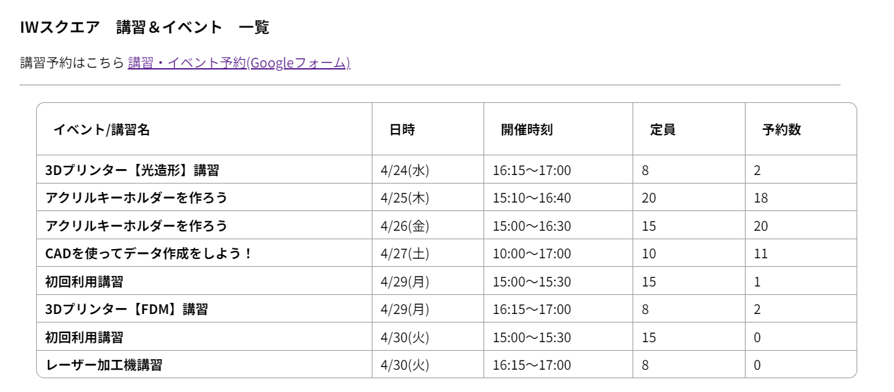
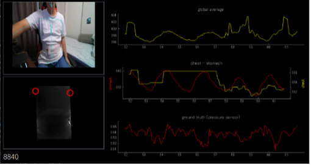

技術スタック
- 言語: Python, JavaScript
- その他: Googleクラウド, GAS
PORTFOLIO TEMPLATE
高専本科 → 専攻科 → 大学院で情報工学を専攻科。 高専本科でのサークル活動から機械学習の学習を開始。 専攻科では、機械学習を用いた画像認識の研究に従事し、学会発表も経験。
大学院では、医用画像処理分野でルールベースの手法を研究に取り組み、学会発表も経験。 アルバイトでAI開発、先端技術の調査実装を経験。
趣味はゲームとアニメで、特にFPSゲームが好きです。 休日はゲームに関する開発、blenderなどを利用した個人的な 創作活動を行っています。
概要:
海上のゴミを回収するための無人船プロジェクト
担当:
AIによるゴミ検出アルゴリズムの開発、操縦プログラムの設計
技術: Python, OpenCV, Jetson Nano
概要:
学生主体工場のシステム開発を担当。
利用者の設備予約、講習登録、入退室の記録を一元化したシステムを構築。
技術: Google Apps Script, Plane web app

リンク: 紹介ページ
概要:
深度カメラを用いて、呼吸波形を推定する研究。
患者を撮影しながらリアルタイムで呼吸波形を推定するシステムを構築し、医療現場での活用を目指す。
主に推定精度の向上、新規評価手法の提案に取り組む。

学会:
技術: Python, OpenCV, 深度カメラ